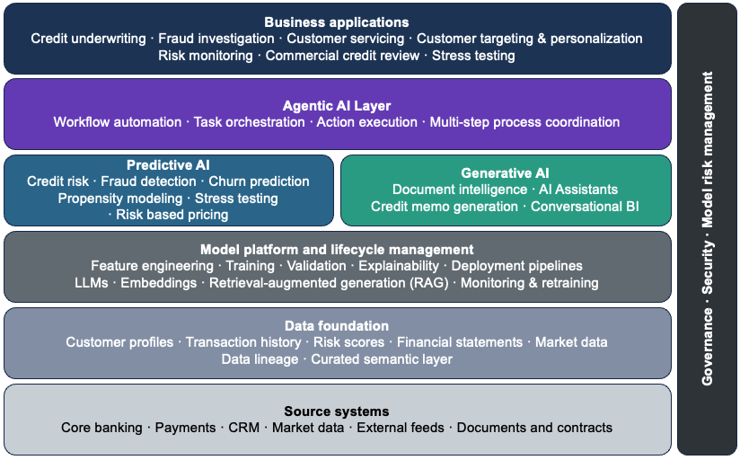

AI Roadmap for Banking
From Predictive AI to Generative AI and the Path to Agentic Operations
1 Introduction
Banks are not new to artificial intelligence. For decades, predictive models have powered core decisions across credit risk, fraud detection, customer attrition, pricing, and marketing. What has changed with the rise of Generative AI is not the relevance of these models, but the scope of what AI can now support. Instead of only predicting outcomes, AI systems can increasingly understand unstructured information, synthesize context, and communicate insights in human language.
Generative AI does not replace predictive AI. It complements it. Banks that frame their strategy as “GenAI versus traditional analytics” risk discarding proven capabilities rather than building on them. The real opportunity lies in combining both forms of intelligence within end-to-end banking workflows.
This roadmap covers the full AI strategy for banking—from predictive models through generative AI to the emerging frontier of agentic operations, where AI systems execute work autonomously within governed boundaries. For banks ready to move into agentic AI deployment, a companion article—Building the AI-First Bank: A Strategic Guide—covers that execution layer in depth.
3 Predictive AI Use Cases in Banking
3.1 Risk and Capital Management
Predictive AI remains foundational to how banks manage risk and allocate capital. In credit risk, predictive models estimate probability of default, loss severity, and exposure across retail and commercial portfolios. These outputs directly inform underwriting decisions, pricing, capital planning, and regulatory stress testing. While modeling techniques have evolved over time, the role of predictive AI in enforcing consistency, discipline, and regulatory alignment has remained constant.
3.2 Fraud Detection and Financial Crime Monitoring
Fraud detection and financial crime monitoring represent another core application of predictive AI. Models analyze transaction patterns and behavioral signals to surface anomalies in real time, adapting to evolving fraud tactics more effectively than static rule-based systems. Predictive models reduce false positives while improving detection accuracy, delivering measurable gains in both customer experience and operational efficiency.
3.3 Customer Analytics, Marketing, and Sales Effectiveness
Predictive AI also plays a central role in customer analytics, marketing, and sales optimization. Propensity, churn, and lifetime value models help banks anticipate customer behavior, personalize offers, and prioritize retention efforts. In commercial banking and wealth management, similar techniques support lead scoring, pipeline prioritization, and relationship deepening. In many institutions, these models drive measurable revenue growth while improving relevance and reducing wasted effort.
3.4 Core Predictive AI Applications
| Use Case | Business Problem | Business Impact |
|---|---|---|
| Credit Risk Models | Estimate default probability and loss severity across portfolios | Improved capital allocation, regulatory compliance, consistent underwriting decisions |
| Risk-Based Pricing | Set loan pricing based on individual customer risk assessment | Balanced profitability and risk, competitive pricing without margin erosion |
| Stress Testing | Assess financial stability under adverse economic scenarios | Regulatory compliance, proactive capital planning, risk mitigation |
| Fraud Detection | Identify fraudulent transactions in real time | Reduced fraud losses, fewer false positives, improved customer experience |
| Customer Churn Models | Predict likelihood of customer attrition | Targeted retention campaigns, reduced customer acquisition costs |
| Customer Lifetime Value | Forecast long-term customer profitability | Optimized marketing spend, prioritized relationship investment |
| Propensity Models | Identify customers likely to respond to specific offers | Higher conversion rates, improved campaign ROI, reduced marketing waste |
| Channel Performance | Optimize resource allocation across branches, digital, and ATM networks | Improved operational efficiency, better customer access, reduced costs |
Across these domains, predictive AI excels where outcomes are measurable and historical data is available. Predictive models do not naturally interpret unstructured information such as documents, emails, or call transcripts, nor do they explain outcomes in human terms. This is where generative AI adds its most value.
4 Generative AI Use Cases in Banking
Generative AI extends the scope of what AI can support in banking. Rather than predicting outcomes, these models interpret unstructured information, synthesize context, and communicate in human language—capabilities that address long-standing operational bottlenecks.
4.1 Document Intelligence and Knowledge Processing
Document intelligence is among the fastest areas of generative AI adoption in banking. Banks process vast volumes of contracts, financial statements, regulatory guidance, policies, and internal reports. Generative models can summarize lengthy documents, extract key themes, highlight risks, and draft standardized outputs such as credit memos, compliance summaries, or internal briefs. Human oversight remains essential, but generative AI dramatically reduces the time required to move from raw information to informed decision-making.
4.2 Customer and Employee Assistants
Generative AI has moved conversational interfaces well beyond earlier chatbots, enabling more capable customer- and employee-facing assistants. Modern generative systems handle complex, multi-turn interactions and adapt responses based on context. For customers, this improves self-service for routine inquiries. Internally, generative assistants help employees navigate policies, retrieve institutional knowledge, and synthesize information across systems.
4.3 Generative BI and Decision Support
Generative AI also enables a new interaction model for analytics, often referred to as Generative BI. Business users can ask questions in natural language and receive contextual explanations rather than relying solely on static dashboards. When grounded in curated semantic models and governed appropriately, this capability lowers the barrier to insight while preserving analytical rigor, particularly for executives and business leaders.
4.4 Core Generative AI Applications
| Use Case | Business Problem | Business Impact |
|---|---|---|
| Credit Memo Generation | Manual underwriting documentation is slow and inconsistent | Faster underwriting documentation with consistent structure and rationale across cases |
| Contract Review & Analysis | Legal document review creates underwriting bottlenecks | Quicker identification of unusual terms, reduced legal review time, consistent analysis across deals |
| Document Summarization | Analysts spend hours reading research reports and compliance docs | Analysts move from raw documents to informed decisions in minutes rather than hours |
| Customer Service Assistants | High call volumes, long wait times, inconsistent service quality | Improved self-service resolution, reduced wait times, consistent service quality across channels |
| Employee Knowledge Assistants | Employees struggle to navigate policies and institutional knowledge | Immediate access to policies and institutional knowledge, improved compliance adherence |
| Generative BI | Executives need quick insights without waiting for analyst reports | Business users access insights without analyst dependency, faster executive decision-making |
| Fraud Investigation Support | Investigators manually review cases and draft summaries | Investigators spend less time on evidence gathering and documentation, faster case resolution |
| Meeting Notes & Follow-up | Advisors spend significant time on administrative tasks post-meeting | Advisors shift time from administrative tasks to client-facing work |
Across these use cases, generative AI does not replace predictive decision-making. Instead, it surrounds it. Generative models prepare inputs, interpret outputs, and accelerate follow-up by translating analytical results into plain language. Predictive models continue to determine what decision should be made; generative models help humans understand why and move faster on what comes next.
5 Real-World Impact: Where Predictive and Generative AI Work Together
The value of combining predictive and generative AI is most visible in production banking workflows. In credit underwriting, predictive models still drive the risk decision, but generative AI accelerates the process by analyzing financial statements, extracting key metrics, and summarizing legal clauses. JPMorgan’s COiN platform saved over 360,000 hours by automating legal document reviews, while Zest AI reduced underwriting timelines from days to minutes and increased approval rates by up to 25% without adding credit risk.
In fraud detection, predictive models identify anomalies in transaction patterns, but generative AI supports investigators by summarizing account histories, flagging unusual activity narratives, and drafting case summaries. Mastercard reported a 20% improvement in detection accuracy and an 85% reduction in false positives by combining both capabilities within a single decisioning workflow.
In wealth management, predictive models power portfolio analytics and risk assessments, while generative AI handles post-meeting follow-up. Morgan Stanley’s AI @ Morgan Stanley Debrief automates meeting notes and generates personalized client summaries, saving advisors 10–15 hours per week and allowing them to focus on higher-value client interactions rather than administrative tasks.
These examples share a common pattern: predictive AI handles structured decision-making, while generative AI reduces friction in preparing inputs, interpreting results, and executing follow-up actions. The impact comes not from deploying either capability in isolation, but from integrating both into end-to-end workflows where decisions must be accurate, explainable, and operationally efficient.
6 Architecture to Enable AI in Banking
As banks move from isolated analytics use cases to AI-enabled data products, architecture becomes the primary determinant of whether those investments translate into durable business value. Traditional banking technology stacks—organized around products and channels—reinforce silos that complicate integration and slow change. A platform-oriented architecture breaks these silos by aligning data, analytics, and technology capabilities around shared foundations. In regulated environments, scalable AI depends less on individual models and more on consistent data foundations, reusable platform capabilities, and embedded governance that makes it easier to evolve systems over time.

6.1 Data Foundations and Semantic Consistency
A scalable AI architecture depends less on individual models and more on the data foundation that supports them. Banks that invest in shared, well-governed data infrastructure reduce duplication and accelerate deployment—each new model or use case builds on the same foundation rather than requiring custom data pipelines from scratch.
Banks tend to adopt centralized or hybrid data architecture patterns. Centralized architectures provide strong governance and consistent definitions across the enterprise. Hybrid models balance enterprise standards with domain-level ownership, allowing business units to develop data products faster while adhering to shared governance controls. Regulatory and risk requirements—particularly around data lineage, access controls, and auditability—make these two patterns the most effective in banking environments.
Within this foundation, predictive and generative AI operate as complementary capabilities. Predictive AI functions within the processing and analytics layers, where models score transactions, customers, and portfolios against structured data. Generative AI extends the same foundation by synthesizing unstructured information—documents, emails, call transcripts—and delivering insights through conversational and narrative interfaces. Both depend on the same underlying data quality, lineage, and governance controls to operate reliably.
6.2 Model Platforms
Above the data foundation sits the model and analytics layer, where predictive and generative workloads coexist. Predictive AI typically runs on mature machine learning platforms that support feature engineering, training, validation, explainability, and model risk management. Generative AI introduces additional components, including large language models, embedding services, and retrieval mechanisms that ground outputs in enterprise data. Retrieval-augmented generation has emerged as the preferred approach for grounding generative outputs in enterprise data—allowing models to access proprietary information at query time without requiring sensitive data to be embedded in model weights.
6.3 Integration and Workflow Enablement
Integration is where architecture either enables scale or becomes a bottleneck. Predictive models operate behind the scenes, scoring transactions or customers in real time. Generative models sit closer to users, embedded in dashboards, workflow tools, and internal applications. Both capabilities should be exposed through well-defined services and APIs, allowing them to be composed into end-to-end workflows—enabling predictive insights to trigger generative explanations or summaries without tightly coupling systems or duplicating logic.
At the user-facing layer, this integration appears as advisor desktops, customer assistants, and analyst tools—where predictive scores and generative narratives are delivered together in a single, coherent experience. This is where architecture becomes visible to the business: not as infrastructure, but as capability that bankers and customers interact with directly.
6.4 Designing for Change and Future Capability
AI architecture must be built to change. Models will change and regulations will evolve. Banks that hard-code assumptions about specific vendors or model types limit their ability to adapt. A modular, layered architecture allows institutions to incorporate new predictive techniques or generative models without destabilizing existing systems, turning AI from a series of pilots into a durable enterprise capability.
The same architectural principles apply as banks move toward agentic operations. Agentic deployments require three additional architectural elements:
- An action layer where domain agents execute core banking processes within defined policy boundaries
- An intelligence layer that coordinates agent planning and orchestration across multi-step workflows
- A data layer that provides agents controlled access to enterprise information at execution time, under strict access, logging, and audit controls
The governance and security controls already embedded in the architecture must extend to cover agent activity—including agent registries, action limits, and audit trails for every agent decision. Banks that build modular, layered architectures now are better positioned to extend them for agentic workloads without rebuilding from scratch. For a detailed treatment of agentic architecture, see Building the AI-First Bank: Agents, Architecture, and the Path to Autonomous Banking.
7 Governance and Risk Management
Architecture defines what can be built. Governance and risk management define what should be deployed. In regulated banking, these are inseparable—AI systems must satisfy both technical requirements and regulatory expectations before they can operate at scale.
Security and governance are design constraints, not afterthoughts. Generative AI introduces new risks, including unintended data exposure and opaque outputs, while predictive models remain subject to established model risk management expectations. Banks must enforce strong access controls, data segregation, auditability, and continuous monitoring across both model types. Governance frameworks should be embedded into existing risk, compliance, and technology control processes, ensuring accountability without duplicating existing control functions.
7.1 Model Risk Management for Predictive and Generative AI
Model risk management is a regulatory requirement for both predictive and generative AI in banking. The Federal Reserve’s SR 11-7 guidance on model risk management applies equally to traditional credit models and to generative AI systems that support business decisions. While the underlying principles remain consistent—effective challenge, ongoing monitoring, independent validation—the application of these principles must evolve to address the distinct characteristics of generative models.
Predictive models benefit from decades of established validation practices. Banks understand how to assess conceptual soundness, verify implementation, and test outcomes against hold-out data. Model documentation, assumptions, limitations, and performance metrics follow well-understood formats, and model inventory, tiering, and validation cycles are embedded into standard risk management processes.
Generative AI introduces fundamentally different validation challenges. Unlike predictive models that produce numeric scores with measurable accuracy, generative models produce language, summaries, and content whose quality is harder to quantify. There is no single ground truth for whether a credit memo is well-written, a customer response is helpful, or a compliance summary is complete. Validation must therefore extend beyond traditional metrics to include output quality assessments, bias detection, factual accuracy checks, and testing for hallucinations or inappropriate responses.
The core MRM framework still applies. Generative models require clear documentation of intended use, known limitations, data lineage, and performance expectations. They need ongoing monitoring to detect drift, degradation, or misuse. Banks must establish accountability for model ownership, define escalation protocols when outputs fall outside defined limits, and ensure that human review remains part of high-stakes workflows. Independent validation teams must develop new competencies in prompt engineering, LLM evaluation techniques, and red-teaming methods, while maintaining the same rigor and independence expected for traditional models.
Third-party and vendor-provided models present additional challenges. Many banks deploy generative AI through external LLM providers, APIs, or SaaS platforms, where model details may be proprietary or change without notice. Regulatory guidance makes clear that outsourcing does not eliminate accountability—banks remain responsible for understanding model behavior, validating outputs, and ensuring that vendor models meet the institution’s risk standards. This requires contractual protections, regular vendor assessments, and fallback procedures when third-party services fail or behave unexpectedly.
As generative AI becomes more embedded in decision workflows, the boundary between “model” and “application” blurs. A customer-facing assistant or document summarization tool may not fit traditional model definitions, yet it influences outcomes, carries reputational risk, and must be governed accordingly. Banks are adapting MRM frameworks to cover these systems, extending validation principles to AI-enabled products rather than limiting oversight to standalone statistical models. This broader view ensures that governance keeps pace with how AI is actually deployed, rather than being constrained by legacy definitions.
7.2 Security and Access Controls
Security requirements for AI systems cover more than traditional data protection—they include model access controls, output monitoring, and prevention of data leakage through generative interfaces. Banks must implement role-based access, audit trails, and data masking to ensure that AI systems respect the same information barriers that govern human access.
Generative models pose unique risks. They can inadvertently expose sensitive information through responses, combine data across restricted boundaries, or be manipulated through adversarial prompts. Input validation, output filtering, and continuous monitoring address risks that access controls alone cannot prevent.
Agentic deployments expand this attack surface further. Agents interact with production systems autonomously, meaning a compromised agent executes harmful operations rather than simply producing bad output. Controls must scale with autonomy—privilege separation, policy enforcement at the tool layer, and action limits are architectural requirements.
For a detailed treatment of agentic AI security threats and defense strategies, see Securing Agentic AI Systems: A Defense-in-Depth Approach.
7.3 Regulatory Compliance and Auditability
AI systems in banking operate under extensive regulatory oversight. In the United States, SR 11-7 governs model risk management across both predictive and generative AI. ECOA and Regulation B require that credit decisions—including those driven by AI—be explainable in specific, understandable terms. SR 13-19 holds banks accountable for third-party model behavior, even when underlying algorithms are proprietary. Banks operating across jurisdictions must also navigate the EU AI Act, which introduces risk-based requirements for AI systems used in consequential decisions.
Auditability is a cross-cutting requirement. Regulators and internal audit teams must be able to reconstruct decisions, validate that models operate as intended, and verify that governance controls are effective. This requires comprehensive documentation, version control, and the ability to reproduce model outputs on demand—for both predictive scores and generative outputs.
Banks that treat compliance as an afterthought face material regulatory risk. Those that embed it into architecture and operating processes from the start scale more effectively and spend less time retrofitting controls after deployment.
8 Operating Model and Organization
Successful AI programs require more than good architecture and strong governance—they require the right organizational structure, talent strategy, and change management approach. The operating model determines how decisions are made, how resources are allocated, and how capabilities are built and sustained across the enterprise.
8.1 Operating Model
As banks move from experimentation to enterprise-wide AI, the operating model becomes a key enabler of scale. It defines roles, decision rights, resource allocation, and how capabilities are delivered consistently across the organization. Institutions early in their AI journey typically adopt a centralized model—coordinating strategy, standards, and execution from a central team to allocate scarce talent and enforce consistent governance. As maturity grows, many evolve toward a federated model where strategic oversight stays central while execution is delegated to business units. The right choice depends on institutional structure, regulatory environment, and strategic priorities—with flexibility to evolve as capability matures.
8.2 Talent and Organizational Readiness
New roles have emerged as AI has matured in banking. Prompt engineers, LLM evaluation specialists, and AI product managers are now essential alongside traditional data scientists and model risk managers. Validators must extend their competency to cover generative AI evaluation techniques, red-teaming methods, and output quality assessment—capabilities that go beyond traditional model validation.
Build-buy-partner decisions require clear assessment of where competitive advantage lies. Core capabilities—credit risk modeling, fraud detection, customer analytics—warrant internal investment. Commoditized capabilities—infrastructure, model hosting—can be sourced externally without sacrificing strategic control.
Change management is consistently underestimated. AI tools that sit unused because teams don’t trust them or can’t integrate them represent wasted investment. Adoption follows when tools demonstrably save time and reduce errors. Leadership commitment is non-negotiable—programs without sustained executive sponsorship rarely move beyond pilots.
9 From Strategy to Execution: A Phased Approach
Understanding what to build is only half the challenge. The more difficult question is how to get started—how to sequence investments, prioritize use cases, and maintain momentum while managing risk. Banks that succeed avoid both extremes: they neither pursue multi-year transformation programs that delay value, nor launch disconnected pilots that fail to scale. Instead, they adopt a phased approach that delivers measurable impact early while building the architectural foundations needed for long-term scale.
9.1 Phase 1: Foundation and Proof of Value (6–12 Months)
The first phase focuses on establishing technical foundations and early credibility. Banks should prioritize a small number of high-impact use cases that demonstrate value quickly while informing architecture and governance decisions. Foundation-building activities include defining data governance standards, establishing model risk management processes for generative AI, selecting core technology platforms, and implementing baseline security and access controls.
Pilot use cases should be selected based on value versus complexity. High-value, lower-complexity use cases—document summarization for internal teams, conversational assistants for common customer inquiries, or generative BI for executive dashboards—deliver quick wins and build organizational confidence. These pilots should operate on production-grade infrastructure from the start to validate that security, governance, and integration patterns will scale.
By the end of Phase 1, banks should have delivered at least one production use case, established governance and validation processes, and built internal competency in both predictive and generative AI.
9.2 Phase 2: Scaling Capabilities and Expanding Use Cases (12–24 Months)
Phase 2 shifts from foundation-building to scaling. Platform investments made in Phase 1 now support a broader portfolio of use cases across multiple business lines. Platform expansion includes building out shared services—feature stores, model registries, API gateways, and reusable embedding and retrieval infrastructure. Model risk management processes mature to handle higher model volumes with streamlined validation and automated monitoring.
Use case expansion should follow a disciplined prioritization framework. High-impact opportunities include credit underwriting acceleration, fraud investigation support, regulatory reporting automation, and personalized wealth management tools. Each new use case should build on shared platform capabilities rather than creating one-off solutions. Selectivity matters—a smaller portfolio of well-integrated, well-governed capabilities delivers more business value than a large number of fragmented pilots.
9.3 Phase 3: Enterprise Maturity and Continuous Evolution (24+ Months)
By Phase 3, AI capabilities are embedded across core banking workflows and the focus shifts to optimization and continuous improvement. Governance is operationalized, the platform is stable, and the organization has developed the ability to deploy new models and use cases efficiently. Operational priorities include refining model monitoring and retraining processes, optimizing infrastructure costs, and embedding AI literacy across business and technology teams.
Agentic AI, multimodal models, and real-time decisioning can be evaluated and selectively integrated where they deliver clear incremental value. Banks that reach this maturity move from institutions that use AI to institutions where AI is a core competency.
9.4 Prioritization Framework: Selecting the Right Use Cases
Not all AI opportunities are created equal. Effective frameworks assess use cases across four dimensions. Business value covers revenue potential, cost reduction, risk mitigation, and strategic alignment. Technical feasibility considers data availability, model complexity, and integration requirements. Risk and regulatory considerations determine validation rigor—customer-facing decisions require stronger governance while internal productivity tools can move faster. Organizational readiness accounts for team AI literacy and appetite for change.
A balanced portfolio includes quick wins that build momentum, strategic bets that address high-value opportunities, and foundational investments that enable future scale. Most successful programs allocate roughly 30% of effort to near-term value delivery, 50% to scaling proven capabilities, and 20% to exploring emerging opportunities.
10 The Path to Agentic Operations
Generative AI reduces friction and accelerates decisions, but it still operates reactively—responding to prompts, summarizing documents, and supporting human judgment. The next stage moves beyond assistance to autonomous execution. Agentic AI systems plan, coordinate, and act across multi-step banking workflows without continuous human direction—shifting AI from a productivity tool to an operational capability.
This means AI agents that execute loan origination workflows, monitor borrower covenant compliance, triage commercial banking communications, and run stress testing scenarios—coordinating multiple specialized agents within defined risk and governance boundaries. The distinction from generative AI is operational: agents don’t just help bankers work faster, they do structured work independently within policy-governed limits.
The transition to agentic operations follows the same staged logic as the predictive-to-generative progression described in this article. Banks begin with assistive agents that support human decisions before advancing to process execution agents that automate multi-step workflows, and ultimately to autonomous decisioning agents operating within defined guardrails.
The architecture, governance, and operating model principles outlined in this roadmap apply directly to agentic deployments. A strong data foundation, disciplined model risk management, and embedded governance are prerequisites for deploying agents safely at scale in a regulated environment.
For a detailed treatment of agentic AI architecture, agent levels, multi-agent orchestration, and banking use cases, see the companion article: Building the AI-First Bank: A Strategic Guide.
11 Conclusion
AI in banking is no longer a question of experimentation—it is a question of execution. Predictive AI has proven its value across risk, fraud, and customer analytics. Generative AI extends these capabilities by interpreting unstructured information, accelerating decisions, and reducing operational friction. Agentic AI represents the next stage—where AI systems move from augmenting human judgment to executing work autonomously within governed boundaries. The opportunity lies not in choosing between these capabilities, but in integrating them within the same business workflows.
Banks that succeed will avoid the trap of isolated pilots and focus on end-to-end transformation. That requires clarity on where predictive models drive decisions, where generative models augment human judgment, and how both are governed within a regulated environment. Without this clarity, AI investments remain fragmented and difficult to scale.
Architecture is the decisive factor. A shared data foundation, disciplined model lifecycle management, secure integration patterns, and embedded governance turn AI from a collection of tools into an enterprise capability. Institutions that treat architecture as a first-class element of their AI roadmap position themselves to scale responsibly, adapt as technology evolves, and deliver durable business value.
Competitive advantage will not come from adopting the latest model first, but from building the foundations that allow AI—predictive and generative alike—to be applied consistently, safely, and at scale.